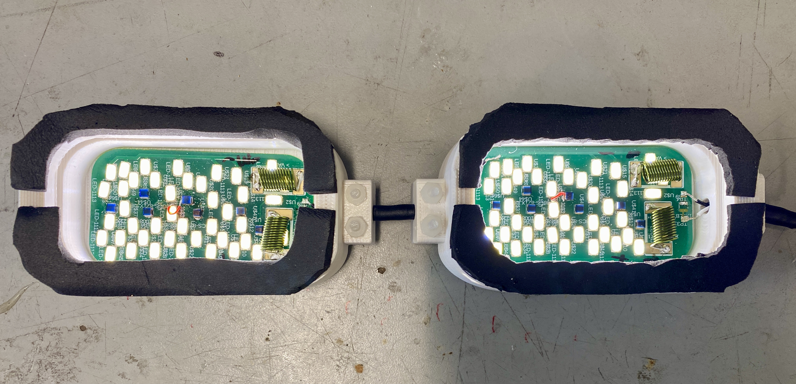
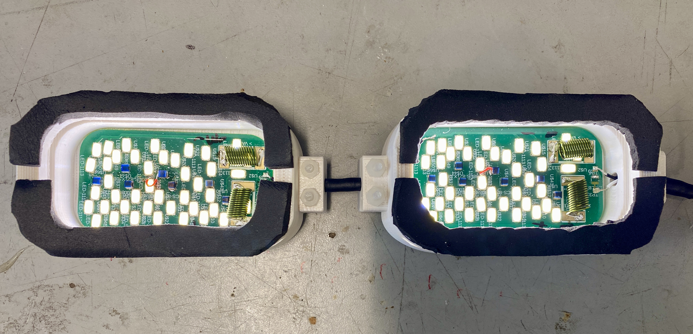

Problem
Currently, there isn’t yet a way to provide visual stimuli to both eyes simultaneously and individually to see which side of the brain has stronger results (contralateral vs ipsilateral).
Objective
To design and build visual stimulus goggles for ultra-high field (7 Tesla) MRI for high resolution studies of functional organization of visual cortex using SOLIDWORKS, Arduino, and EAGLE. The goggles must be electromagnetically compatible to a high-res 7T MRI, compact, able to control color, able to adjust luminance, provide motion stimulus, and binocularly adjustable.
Skills Employed
- SOLIDWORKS 3D CAD model
- EAGLE: schematics and PCB layouts
- Arduino
- Working with electromechanics in ultra-high field MRI
- Machine shop manufacturing and tool use (tapping, drills, sanding)
- Testing fixture design/mechanical testing


 
